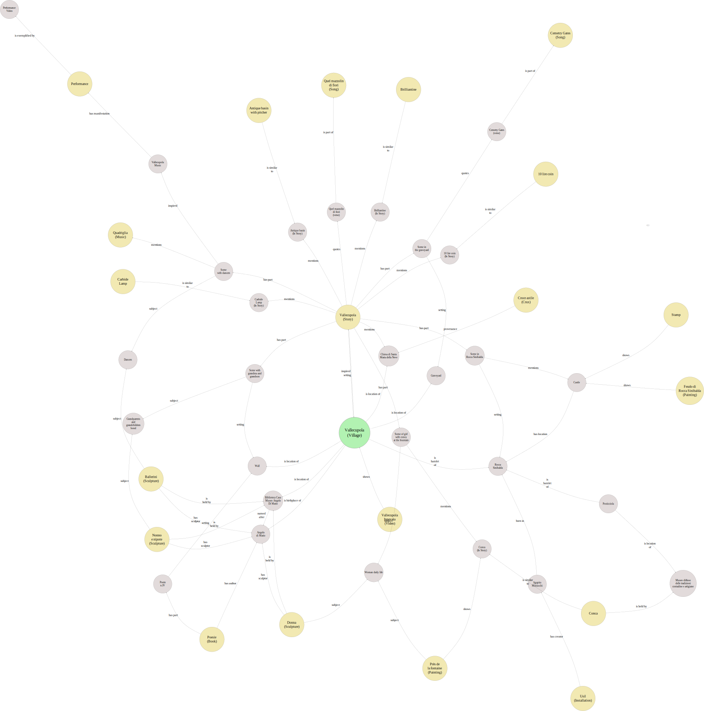
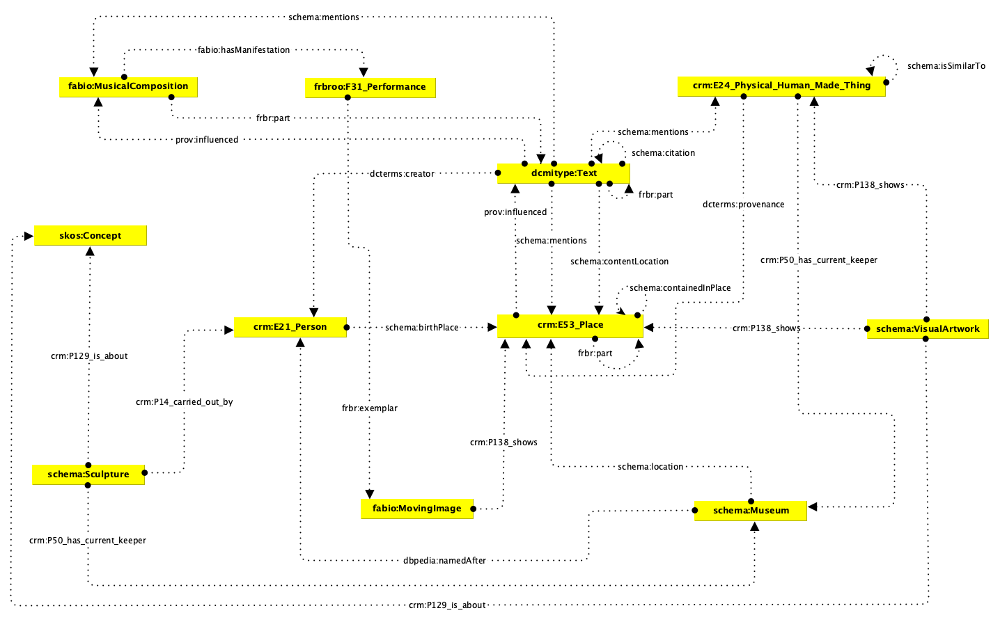
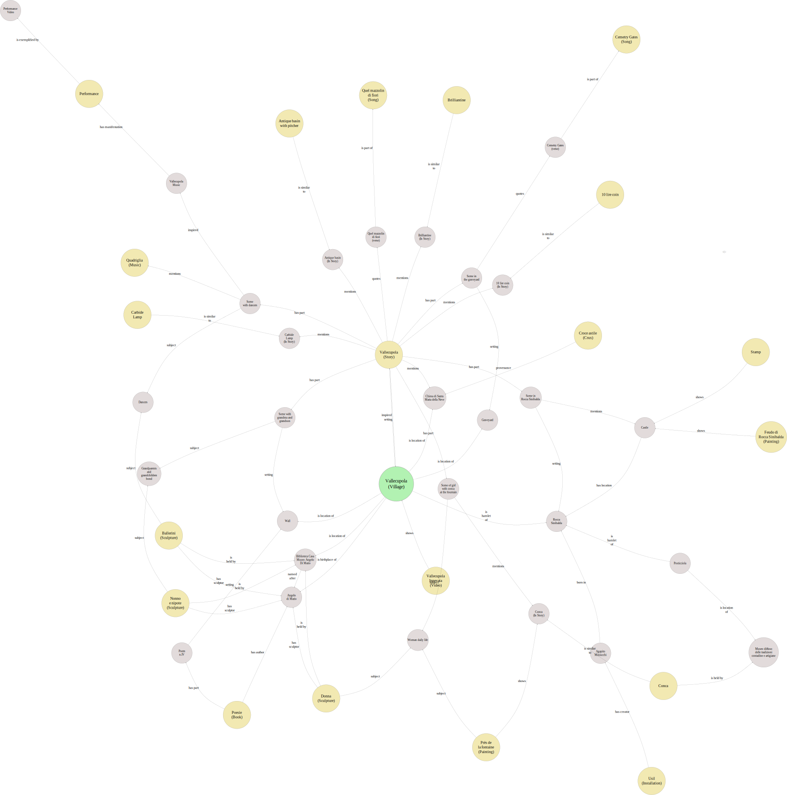
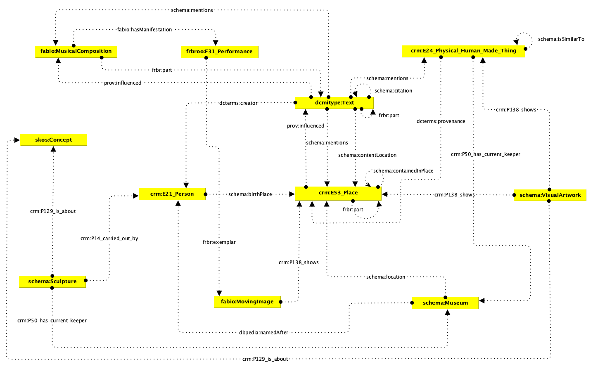
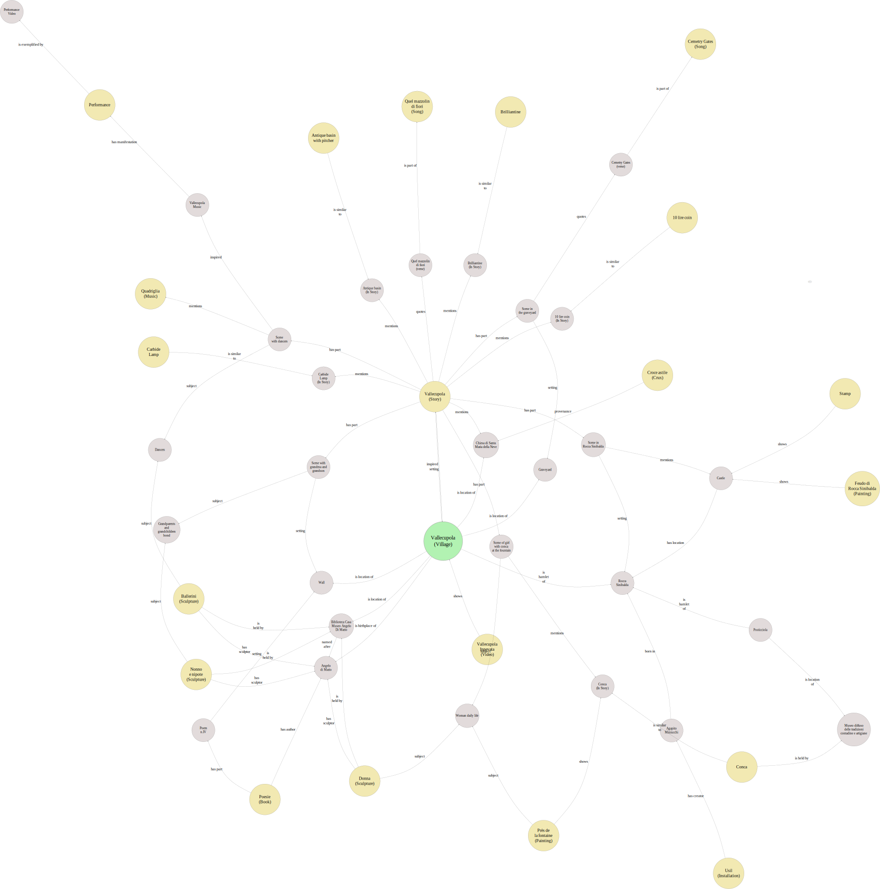
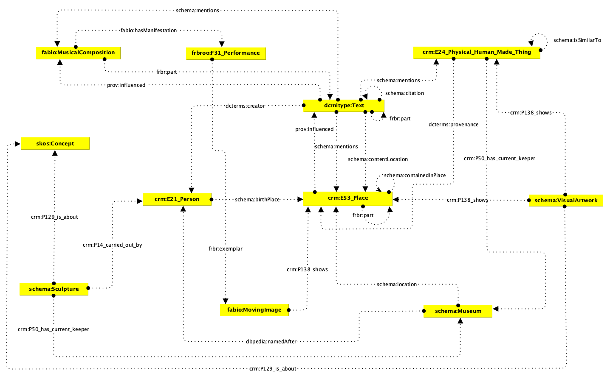

The project knowledge representation strategy is built around *accessibility, **reusability, and **interoperability* within the context of a *Linked Open Data (LOD)* project. We adopted a *multi-format approach* to ensure that the cultural data can serve diverse audiences and technical environments. To model the cultural heritage objects and their related entities, we created a comprehensive *Excel file* containing *multiple sheets. Each sheet corresponds to a distinct conceptual table in the data model. The format of the tables follows a **Subject–Predicate–Object* structure, combining both: * *Human-readable descriptions* (in natural language), and * *Machine-readable URIs* (for semantic web compatibility). This approach ensures that the metadata can be easily understood by non-experts while remaining fully compatible with LOD principles. Given that Excel is a *proprietary format, we exported each sheet into individual **CSV files* to enhance long-term accessibility and machine processing. CSV was chosen for its wide support across platforms, readability, and compatibility with both relational databases and RDF transformation workflows. In total, we produced *22 CSV files*: * *20 CSVs* describe the core *exhibition objects*. * *1 CSV* contains metadata for *additional entities* (those referenced but not primary objects — often displayed in grey in our conceptual map). * *1 CSV* provides a *prefix–namespace mapping table*, listing all ontological prefixes used in the dataset alongside their corresponding full URIs. All the files produced for the project are: - stored in the *GitHub repository*, serving as both a version-controlled archival platform and a public access point; - downloadable in the Download Section of this website.
For this stage, the goal was development of the XSLT stylesheet and the generation of the final HTML output from the TEI-encoded short story. The primary objective was to ensure that the semantically marked-up XML could be rendered as a clean, accessible HTML document, while preserving the narrative structure and interpretive elements encoded in TEI. The TEI file—produced by another teammate—was formed based on the TEI P5 guidelines and included a variety of structural and semantic elements, such as , , , , , and . As the TEI namespace (http://www.tei-c.org/ns/1.0) was used as the default, a prefix (tei) had to be declared and applied within all XPath expressions in the XSLT. In the transformation process, the following tasks were carried out: * The title and author information were extracted from the and inserted into the and sections of the HTML using XPath. * Elements such as , , and were converted into corresponding HTML and tags to maintain semantic and structural clarity. * Tags used for quotations, hyperlinks, and poetic or lyrical formatting—including , , , and —were matched to semantic HTML equivalents (, , and styled elements). * Special handling was done for visual breaks, with being transformed into elements. The transformation was done using the online tool FreeFormatter.com, which allowed the TEI XML and XSLT files to be processed together and the resulting HTML to be previewed and downloaded. This approach was chosen for its accessibility and convenience, as a local XML/XSLT processing environment is not available. RDF Conversion from CSV and XML Website Development Items Descriptions Target Audiences HTML Structure Themes CSS Theme 1 CSS Theme 2 CSS Theme 3 CSS Theme 4 Narratives Chronological Order Story Guided Tour About Vallecupola Ecosystem Unveiling the Hidden Cultural Network of a Mountain Village Introduction Project Idea Vallecupola is a small mountain village in the centre of Italy. Hamlet of Rocca Sinibalda (RI), it is set in a geographical region called Sabina. Full of art and history, it hosts a library house museum devoted to the poet, writer, sculptor and etruscologist Angelo Di Mario. Moreover, it inspired and became the main setting of a short story named after it and finalist at Premio Campiello Giovani 2024, one of the most important Italian literary prizes. Vallecupola Ecosystem is a project by a group of students at Digital Humanities and Digital Knowledge Master Degree at the University of Bologna, aiming to unveil its hidden value and its connections with a variety of artistic contents, showing how also a small village can become a centre of a big cultural framework. The project, which gives birth both to a small "knowledge base" and a simple "virtual exhibition", leverages the principles of Linked Open Data and offers to the user a full experience, carefully thought for various target audiences to allow anyone to get inside the network around Vallecupola. To get inside Vallecupola Ecosystem. After this introductory chapter, the documentation is divided as follows: Knowledge Management, describing the work required for Information Science and Cultural Heritage exam; Website Development, describing the work required for Information Modelling and Web Technologies exam. Items in the Exhibition The exhibition features a carefully curated collection of items that represent the cultural richness and historical significance of Vallecupola and its surrounding ecosystem. Each item has been selected to tell a part of the story that connects this small mountain village to broader cultural and artistic networks. The exhibition features a carefully curated collection of items that represent the cultural richness and historical significance of Vallecupola and its surrounding ecosystem. Each item has been selected to tell a part of the story that connects this small mountain village to broader cultural and artistic networks. Video Vallecupola Innevata A video of the village in snow that opened a music event in Rocca Sinibalda. Short Story Vallecupola Story inspired to Vallecupola and set in the village, finalist at Campiello Giovani 2024 Prize. Music/Performance Vallecupola Theatrical event capturing the spirit of the village. Sculpture Ballerini Energetic dancers in motion, representing a cultural snapshot. Music Quadriglia Traditional dance formation evoking rural festivities. Object Vasetto per Brillantina Glass jar used for hair cream, symbol of personal care history. Object Conca A traditional basin used for washing or carrying water. Sculpture Donna Portrait of a woman, revealing grace and dignity. Painting Près de La Fontaine Romantic 19th-century painting near a fountain by Van Bree. Music Cemetry Gates Atmospheric image of a symbolic song, entrance to remembrance and silence. Object Catinella A small domestic basin, typical of Italian daily life. Book Poesie A collection of poems reflecting the emotions and landscapes of rural life. Painting Feudo di Rocca Sinibalda Historic landscape painting of Rocca Sinibalda castle by Paul Bril. Installation Usil Modern reinterpretation of the Etruscan solar deity, blending myth and performance. Stamp 550 Lire – Castello di Rocca Sinibalda A vintage postage stamp, marking time and memory. Coin 10 Lire Historical Italian coin, emblem of past national currency. Sculpture Nonno e Nipote A tender family moment between grandfather and grandchild, capturing generational warmth. Artifact Croce Astile A processional cross with intricate detail, symbolic of local religious heritage. Object Lampada a Carburo Carbide lamp, once a staple source of portable light. Music Quel Mazzolin di Fiori Symbolic bouquet tied to Italian folk heritage and songs. Knowledge Management Knowledge Organization The knowledge management strategy for the Vallecupola Ecosystem project is built upon a comprehensive framework that ensures systematic organization, representation, and accessibility of cultural data. Our approach combines traditional archival methods with modern digital humanities techniques. Metadata Analysis Theoretical Model As a first step, it was necessary to shape the knowledge domain, connecting the selected items. In order to show the interconnections between the objects, it was created a graph made of nodes and edges labelled in natural language, explicitly describing the important links between the items. Of course, only the most meaningful features and relations were chosen. The graph resembles a spider web, making it a small dense "knowledge graph", representing real instances and their meaningful bonds. For the reader, it will be sufficiently easy to follow the various paths that bring from one object to the other, understanding the density and relevance of the cultural framework built all around Vallecupola. In this theoretical model, not only can we see the items themselves, but also some extra entities necessary to connect them (they are basically intermediate nodes). In the following reproduction of the theoretical model: the green circle represents the main concept of the domain; the yellow circles represent the twenty chosen items composing the exhibition; the grey circles represent the extra entities (intermediate nodes).  Conceptual Model Our conceptual model provides a structured approach to representing the complex relationships between people, places, objects, and events within the Vallecupola ecosystem. It serves as the foundation for all subsequent data modeling and representation efforts. Starting from the theoretical model, containing the individuals of the knowledge domain, put in relation between each other, it was possibile to elaborate a "conceptual model" by converting the previous into a more abstract level of representation. We collapsed the various individuals in classes, grouping similar ones, also based on their common features. The result is a schema made of 11 classes, of which: 7 representing the museum items: dcmitype:Text for collections, poems, stories; crm:E24_Physical_Human_Made_Thing for various objects and artifacts; schema:VisualArtwork for paintings and stamps; fabio:MovingImage for videos; schema:Sculpture for sculptures and installations; fabio:MusicalComposition for songs and musics; frbroo:F31_Performance for stage performances; 4 representing only the extra entities: crm:E53_Place for villages, hamlets and locations in them; crm:E21_Person for people, artists; schema:Museum for museums holding some items; skos:Concept for subjects represented or topics conveyed by the cultural items. Actually, also some extra entities have classes dcmitype:Text (scenes of the story), crm:E24_Physical_Human_Made_Thing (objects mentioned in the story) and fabio:MovingImage, because they were useful to better express the connections.  This is a model on a really high level of abstraction. It resembles an ontology. Here - as in the previous theoretical model - only the most meaningful part of the knowledge domain has been shown. Indeed, we can only see classes and relations, not all the attributes associated to the classes. In the following list, we recap all the predicates that we used for each class when describing their instances in detail during the CSV creation phase (in yellow the actual relations that you can see as edges in the conceptual model above): dcmitype:Text: dcterms:type, dcterms:title, dcterms:creator, dcterms:publisher, dcterms:spatial, dcterms:issued, dcterms:isPartOf, dcterms:language, dcterms:coverage, dcterms:description, dcterms:identifier, dcterms:source, frbr:part, schema:award, foaf:page, schema:contentLocation, schema:mentions, schema:citation, prov:influenced; crm:E24_Physical_Human_Made_Thing: crm:P2_has_type, dc:subject, dc:title, dc:description, dcterms:issued, dcterms:valid, dc:source, nmo:hasWeight, nmo:hasDiameter, nmo:hasThickness, nmo:hasShape, crm:P50_has_current_keeper, dc:rights, dcterms:isReferencedBy, dc:coverage, pico:materialAndTechnique, a-cd:hasDating, a-cd:hasUse, a-dd:hasTechnicalStatus, a-cd:hasDocumentation, dcterms:created, a-dd:hasDesignationInTime, a-dd:hasTechnique, dc:format, dc:temporal, dcterms:provenance, dc:creator, schema:material, schema:locationCreated, schema:artMedium, schema:image, schema:weight, schema:isSimilarTo; schema:VisualArtwork: rdf:type, crm:P129_is_about, crm:P102_has_title, crm:P14_carried_out_by, crm:P4_has_time-span, crm:P138_shows, crm:P45_consists_of, crm:P70_documents, crm:P104_is_subject_to, crm:P43_has_dimension, crm:P50_has_current_keeper, crm:P55_has_current_location, crm:P53_has_former_location; fabio:MovingImage: rdf:type, dcterms:title, dcterms:creator, dcterms:date, dcterms:publisher, crm:P50_has_current_keeper, dcterms:description, dcterms:extent, crm:P138_shows, foaf:page; schema:Sculpture: crm:P2_has_type, crm:P102_has_title, crm:P14_carried_out_by, crm:P50_has_current_keeper, crm:P129_is_about, crm:P3_has_note, crm:P4_has_time-span, crm:P70_documents, crm:P55_has_current_location, crm:P45_consists_of, crm:P43_has_dimension; fabio:MusicalComposition: rdf:type, mo:title, mo:iswc, mo:performer, mo:duration, mo:record, mo:release_date, mo:instrument, mo:recorded_in, dcterms:language, mo:genre, mo:publisher, dcterms:coverage, mo:producer, mo:lyricist, mo:composer, dcterms:contributor, dcterms:subject, frbr:part, fabio:hasManifestation; frbroo:F31_Performance: rdf:type, event:place, dcterms:date, mo:performer, dcterms:contributor, frbr:exemplar; crm:E53_Place: rdf:type, owl:sameAs, rdfs:label, schema:containedInPlace, prov:influenced, frbr:part; crm:E21_Person: rdf:type, owl:sameAs, rdfs:label, schema:birthPlace; schema:Museum: rdf:type, owl:sameAs, rdfs:label, dbpedia:namedAfter, schema:location; skos:Concept: rdf:type, rdfs:label. As shown, in order to describe cultural objects in a standard-compliant and interoperable way, Vallecupola Ecosystem uses many classes and predicates taken from already existing ontologies. Models cover simple to complex metadata, enabling rich, integrable knowledge. Here, we list all the selected ontologies with prefix, full name, namespace and short description: crm CIDOC Conceptual Reference Model http://www.cidoc-crm.org/cidoc-crm/ A standard for integrating heritage data. schema Schema.org https://schema.org/ A web data schema backed by search engines. dc Dublin Core Elements http://purl.org/dc/elements/1.1/ Basic metadata for digital and physical items. dcterms Dublin Core Terms http://purl.org/dc/terms/ Detailed terms for describing resources. dcmitype DCMI Type Vocabulary http://purl.org/dc/dcmitype/ Defines a standard set of resource types used in Dublin Core metadata. pico PICO Ontology http://data.cochrane.org/ontologies/pico/ Describes materials and techniques of artifacts. a-cd ArCo Context Description https://w3id.org/arco/ontology/context-description/ Describes heritage context and provenance. a-dd ArCo Denotative Description https://w3id.org/arco/ontology/denotative-description/ Describes physical and technical features. frbr Functional Requirements for Bibliographic Records http://purl.org/vocab/frbr/core# Model of bibliographic abstraction levels. rdf Resource Description Framework http://www.w3.org/1999/02/22-rdf-syntax-ns# Basic structure for web-based knowledge. rdfs RDF Schema http://www.w3.org/2000/01/rdf-schema# Adds classes and properties to RDF. foaf Friend of a Friend http://xmlns.com/foaf/0.1/ Describes people and their relationships. frbroo FRBR Object Oriented http://iflastandards.info/ns/fr/frbr/frbroo/ Connects library and museum data models. fabio FRBR-aligned Bibliographic Ontology http://purl.org/spar/fabio/ Describes scholarly and bibliographic works. mo Music Ontology http://purl.org/ontology/mo/ Describes music works, artists, and recordings. event Event Ontology http://purl.org/NET/c4dm/event.owl# Describes events in time and space. nmo Nomisma Ontology http://nomisma.org/ontology# Models numismatic and monetary data. skos Simple Knowledge Organization System http://www.w3.org/2004/02/skos/core# Framework for thesauri and taxonomies. prov PROV Ontology http://www.w3.org/ns/prov# Captures data origin and transformation. owl Web Ontology Language http://www.w3.org/2002/07/owl# Defines rich web ontologies with logic. dbpedia DBpedia Ontology http://dbpedia.org/ontology/ Structures Wikipedia knowledge semantically. When possible, entities have been aligned with authority controls. In particular, the controlled vocabularies used by the project are: gn GeoNames http://sws.geonames.org/ A geographical database that provides unique identifiers for place names worldwide. aat Art & Architecture Thesaurus (AAT) http://vocab.getty.edu/aat/ A structured vocabulary for describing objects, materials, and activities related to art and architecture. iso639 ISO 639-2 Language Codes http://id.loc.gov/vocabulary/iso639-2/ A controlled vocabulary of three-letter codes representing languages. wd Wikidata https://www.wikidata.org/wiki/ A collaborative knowledge base that provides structured identifiers for concepts and entities. Knowledge Representation The knowledge representation strategy encompasses multiple formats and standards to ensure maximum accessibility and reusability of the cultural data. Our multi-format approach allows for different use cases and technical requirements. CSV Descriptions of Items (JOHN) Structured tabular data representations provide a straightforward and accessible format for describing exhibition items. The CSV format ensures compatibility with spreadsheet applications and database systems while maintaining human readability. creation of the excel with different sheets, containing tables every table has subject predicate object description, both in natural language for humans and uri for machine we uploaded the excel in github for storage reasons, but it is a proprietary format, se we converted every sheet into a csv we uploaded the CSVs in github, too. content of the CSVs: 20 descriptions of the objects 1 extra table for extra entities (the grey ones in the theoretical map) 1 table matching all the prefixes we used with the corresponding namespaces XML-TEI Encoding of the Story The Text Encoding Initiative (TEI) standard has been employed to encode the narrative elements of the Vallecupola story. This approach ensures scholarly rigor and enables sophisticated textual analysis and presentation options. HTML Conversion of the Story (JOHN) Web-ready HTML versions of the encoded texts provide immediate accessibility for online audiences. The conversion process maintains the structural integrity of the original TEI encoding while optimizing for web presentation. RDF Conversion from CSV and XML Website Development Items Descriptions The website development process focuses on creating an engaging and accessible platform for presenting the Vallecupola Ecosystem exhibition. Our approach emphasizes user experience, accessibility, and responsive design principles. Target Audiences The website is designed to serve multiple target audiences, including academic researchers, cultural heritage professionals, tourists, and local community members. Each audience has specific needs and expectations that inform the design and functionality decisions. HTML Structure The HTML structure follows semantic markup principles and web accessibility guidelines. The markup provides a solid foundation for styling and interactive functionality while ensuring compatibility across different browsers and assistive technologies. Themes Multiple visual themes have been developed to accommodate different preferences and use cases. Each theme maintains consistency with the overall brand identity while offering unique visual experiences. CSS Theme 1 The first theme emphasizes clean, minimal design with a focus on readability and accessibility. It uses a neutral color palette and traditional typography to create a professional, scholarly appearance. CSS Theme 2 The second theme incorporates warmer colors and more dynamic visual elements to create a more engaging and inviting experience. It balances visual appeal with functional requirements. CSS Theme 3 The third theme explores contemporary design trends with bold typography and vibrant colors. It aims to attract younger audiences while maintaining professional standards. CSS Theme 4 The fourth theme focuses on high contrast and accessibility features, ensuring that the content is accessible to users with various visual needs and preferences. Narratives The narrative structure of the website supports multiple ways of exploring the Vallecupola Ecosystem, allowing users to choose their preferred approach to discovering the content. Chronological Order The chronological narrative presents the story of Vallecupola through time, allowing users to understand the historical development of the village and its cultural significance. Story The story-based narrative provides a more literary approach to exploring the content, weaving together historical facts, cultural insights, and personal experiences into a cohesive narrative.
, , , and . As the TEI namespace (http://www.tei-c.org/ns/1.0) was used as the default, a prefix (tei) had to be declared and applied within all XPath expressions in the XSLT. In the transformation process, the following tasks were carried out: * The title and author information were extracted from the and inserted into the and sections of the HTML using XPath. * Elements such as , , and were converted into corresponding HTML and tags to maintain semantic and structural clarity. * Tags used for quotations, hyperlinks, and poetic or lyrical formatting—including , , , and —were matched to semantic HTML equivalents (, , and styled elements). * Special handling was done for visual breaks, with being transformed into elements. The transformation was done using the online tool FreeFormatter.com, which allowed the TEI XML and XSLT files to be processed together and the resulting HTML to be previewed and downloaded. This approach was chosen for its accessibility and convenience, as a local XML/XSLT processing environment is not available. RDF Conversion from CSV and XML Website Development Items Descriptions Target Audiences HTML Structure Themes CSS Theme 1 CSS Theme 2 CSS Theme 3 CSS Theme 4 Narratives Chronological Order Story Guided Tour About Vallecupola Ecosystem Unveiling the Hidden Cultural Network of a Mountain Village Introduction Project Idea Vallecupola is a small mountain village in the centre of Italy. Hamlet of Rocca Sinibalda (RI), it is set in a geographical region called Sabina. Full of art and history, it hosts a library house museum devoted to the poet, writer, sculptor and etruscologist Angelo Di Mario. Moreover, it inspired and became the main setting of a short story named after it and finalist at Premio Campiello Giovani 2024, one of the most important Italian literary prizes. Vallecupola Ecosystem is a project by a group of students at Digital Humanities and Digital Knowledge Master Degree at the University of Bologna, aiming to unveil its hidden value and its connections with a variety of artistic contents, showing how also a small village can become a centre of a big cultural framework. The project, which gives birth both to a small "knowledge base" and a simple "virtual exhibition", leverages the principles of Linked Open Data and offers to the user a full experience, carefully thought for various target audiences to allow anyone to get inside the network around Vallecupola. To get inside Vallecupola Ecosystem. After this introductory chapter, the documentation is divided as follows: Knowledge Management, describing the work required for Information Science and Cultural Heritage exam; Website Development, describing the work required for Information Modelling and Web Technologies exam. Items in the Exhibition The exhibition features a carefully curated collection of items that represent the cultural richness and historical significance of Vallecupola and its surrounding ecosystem. Each item has been selected to tell a part of the story that connects this small mountain village to broader cultural and artistic networks. The exhibition features a carefully curated collection of items that represent the cultural richness and historical significance of Vallecupola and its surrounding ecosystem. Each item has been selected to tell a part of the story that connects this small mountain village to broader cultural and artistic networks. Video Vallecupola Innevata A video of the village in snow that opened a music event in Rocca Sinibalda. Short Story Vallecupola Story inspired to Vallecupola and set in the village, finalist at Campiello Giovani 2024 Prize. Music/Performance Vallecupola Theatrical event capturing the spirit of the village. Sculpture Ballerini Energetic dancers in motion, representing a cultural snapshot. Music Quadriglia Traditional dance formation evoking rural festivities. Object Vasetto per Brillantina Glass jar used for hair cream, symbol of personal care history. Object Conca A traditional basin used for washing or carrying water. Sculpture Donna Portrait of a woman, revealing grace and dignity. Painting Près de La Fontaine Romantic 19th-century painting near a fountain by Van Bree. Music Cemetry Gates Atmospheric image of a symbolic song, entrance to remembrance and silence. Object Catinella A small domestic basin, typical of Italian daily life. Book Poesie A collection of poems reflecting the emotions and landscapes of rural life. Painting Feudo di Rocca Sinibalda Historic landscape painting of Rocca Sinibalda castle by Paul Bril. Installation Usil Modern reinterpretation of the Etruscan solar deity, blending myth and performance. Stamp 550 Lire – Castello di Rocca Sinibalda A vintage postage stamp, marking time and memory. Coin 10 Lire Historical Italian coin, emblem of past national currency. Sculpture Nonno e Nipote A tender family moment between grandfather and grandchild, capturing generational warmth. Artifact Croce Astile A processional cross with intricate detail, symbolic of local religious heritage. Object Lampada a Carburo Carbide lamp, once a staple source of portable light. Music Quel Mazzolin di Fiori Symbolic bouquet tied to Italian folk heritage and songs. Knowledge Management Knowledge Organization The knowledge management strategy for the Vallecupola Ecosystem project is built upon a comprehensive framework that ensures systematic organization, representation, and accessibility of cultural data. Our approach combines traditional archival methods with modern digital humanities techniques. Metadata Analysis Theoretical Model As a first step, it was necessary to shape the knowledge domain, connecting the selected items. In order to show the interconnections between the objects, it was created a graph made of nodes and edges labelled in natural language, explicitly describing the important links between the items. Of course, only the most meaningful features and relations were chosen. The graph resembles a spider web, making it a small dense "knowledge graph", representing real instances and their meaningful bonds. For the reader, it will be sufficiently easy to follow the various paths that bring from one object to the other, understanding the density and relevance of the cultural framework built all around Vallecupola. In this theoretical model, not only can we see the items themselves, but also some extra entities necessary to connect them (they are basically intermediate nodes). In the following reproduction of the theoretical model: the green circle represents the main concept of the domain; the yellow circles represent the twenty chosen items composing the exhibition; the grey circles represent the extra entities (intermediate nodes).  Conceptual Model Our conceptual model provides a structured approach to representing the complex relationships between people, places, objects, and events within the Vallecupola ecosystem. It serves as the foundation for all subsequent data modeling and representation efforts. Starting from the theoretical model, containing the individuals of the knowledge domain, put in relation between each other, it was possibile to elaborate a "conceptual model" by converting the previous into a more abstract level of representation. We collapsed the various individuals in classes, grouping similar ones, also based on their common features. The result is a schema made of 11 classes, of which: 7 representing the museum items: dcmitype:Text for collections, poems, stories; crm:E24_Physical_Human_Made_Thing for various objects and artifacts; schema:VisualArtwork for paintings and stamps; fabio:MovingImage for videos; schema:Sculpture for sculptures and installations; fabio:MusicalComposition for songs and musics; frbroo:F31_Performance for stage performances; 4 representing only the extra entities: crm:E53_Place for villages, hamlets and locations in them; crm:E21_Person for people, artists; schema:Museum for museums holding some items; skos:Concept for subjects represented or topics conveyed by the cultural items. Actually, also some extra entities have classes dcmitype:Text (scenes of the story), crm:E24_Physical_Human_Made_Thing (objects mentioned in the story) and fabio:MovingImage, because they were useful to better express the connections.  This is a model on a really high level of abstraction. It resembles an ontology. Here - as in the previous theoretical model - only the most meaningful part of the knowledge domain has been shown. Indeed, we can only see classes and relations, not all the attributes associated to the classes. In the following list, we recap all the predicates that we used for each class when describing their instances in detail during the CSV creation phase (in yellow the actual relations that you can see as edges in the conceptual model above): dcmitype:Text: dcterms:type, dcterms:title, dcterms:creator, dcterms:publisher, dcterms:spatial, dcterms:issued, dcterms:isPartOf, dcterms:language, dcterms:coverage, dcterms:description, dcterms:identifier, dcterms:source, frbr:part, schema:award, foaf:page, schema:contentLocation, schema:mentions, schema:citation, prov:influenced; crm:E24_Physical_Human_Made_Thing: crm:P2_has_type, dc:subject, dc:title, dc:description, dcterms:issued, dcterms:valid, dc:source, nmo:hasWeight, nmo:hasDiameter, nmo:hasThickness, nmo:hasShape, crm:P50_has_current_keeper, dc:rights, dcterms:isReferencedBy, dc:coverage, pico:materialAndTechnique, a-cd:hasDating, a-cd:hasUse, a-dd:hasTechnicalStatus, a-cd:hasDocumentation, dcterms:created, a-dd:hasDesignationInTime, a-dd:hasTechnique, dc:format, dc:temporal, dcterms:provenance, dc:creator, schema:material, schema:locationCreated, schema:artMedium, schema:image, schema:weight, schema:isSimilarTo; schema:VisualArtwork: rdf:type, crm:P129_is_about, crm:P102_has_title, crm:P14_carried_out_by, crm:P4_has_time-span, crm:P138_shows, crm:P45_consists_of, crm:P70_documents, crm:P104_is_subject_to, crm:P43_has_dimension, crm:P50_has_current_keeper, crm:P55_has_current_location, crm:P53_has_former_location; fabio:MovingImage: rdf:type, dcterms:title, dcterms:creator, dcterms:date, dcterms:publisher, crm:P50_has_current_keeper, dcterms:description, dcterms:extent, crm:P138_shows, foaf:page; schema:Sculpture: crm:P2_has_type, crm:P102_has_title, crm:P14_carried_out_by, crm:P50_has_current_keeper, crm:P129_is_about, crm:P3_has_note, crm:P4_has_time-span, crm:P70_documents, crm:P55_has_current_location, crm:P45_consists_of, crm:P43_has_dimension; fabio:MusicalComposition: rdf:type, mo:title, mo:iswc, mo:performer, mo:duration, mo:record, mo:release_date, mo:instrument, mo:recorded_in, dcterms:language, mo:genre, mo:publisher, dcterms:coverage, mo:producer, mo:lyricist, mo:composer, dcterms:contributor, dcterms:subject, frbr:part, fabio:hasManifestation; frbroo:F31_Performance: rdf:type, event:place, dcterms:date, mo:performer, dcterms:contributor, frbr:exemplar; crm:E53_Place: rdf:type, owl:sameAs, rdfs:label, schema:containedInPlace, prov:influenced, frbr:part; crm:E21_Person: rdf:type, owl:sameAs, rdfs:label, schema:birthPlace; schema:Museum: rdf:type, owl:sameAs, rdfs:label, dbpedia:namedAfter, schema:location; skos:Concept: rdf:type, rdfs:label. As shown, in order to describe cultural objects in a standard-compliant and interoperable way, Vallecupola Ecosystem uses many classes and predicates taken from already existing ontologies. Models cover simple to complex metadata, enabling rich, integrable knowledge. Here, we list all the selected ontologies with prefix, full name, namespace and short description: crm CIDOC Conceptual Reference Model http://www.cidoc-crm.org/cidoc-crm/ A standard for integrating heritage data. schema Schema.org https://schema.org/ A web data schema backed by search engines. dc Dublin Core Elements http://purl.org/dc/elements/1.1/ Basic metadata for digital and physical items. dcterms Dublin Core Terms http://purl.org/dc/terms/ Detailed terms for describing resources. dcmitype DCMI Type Vocabulary http://purl.org/dc/dcmitype/ Defines a standard set of resource types used in Dublin Core metadata. pico PICO Ontology http://data.cochrane.org/ontologies/pico/ Describes materials and techniques of artifacts. a-cd ArCo Context Description https://w3id.org/arco/ontology/context-description/ Describes heritage context and provenance. a-dd ArCo Denotative Description https://w3id.org/arco/ontology/denotative-description/ Describes physical and technical features. frbr Functional Requirements for Bibliographic Records http://purl.org/vocab/frbr/core# Model of bibliographic abstraction levels. rdf Resource Description Framework http://www.w3.org/1999/02/22-rdf-syntax-ns# Basic structure for web-based knowledge. rdfs RDF Schema http://www.w3.org/2000/01/rdf-schema# Adds classes and properties to RDF. foaf Friend of a Friend http://xmlns.com/foaf/0.1/ Describes people and their relationships. frbroo FRBR Object Oriented http://iflastandards.info/ns/fr/frbr/frbroo/ Connects library and museum data models. fabio FRBR-aligned Bibliographic Ontology http://purl.org/spar/fabio/ Describes scholarly and bibliographic works. mo Music Ontology http://purl.org/ontology/mo/ Describes music works, artists, and recordings. event Event Ontology http://purl.org/NET/c4dm/event.owl# Describes events in time and space. nmo Nomisma Ontology http://nomisma.org/ontology# Models numismatic and monetary data. skos Simple Knowledge Organization System http://www.w3.org/2004/02/skos/core# Framework for thesauri and taxonomies. prov PROV Ontology http://www.w3.org/ns/prov# Captures data origin and transformation. owl Web Ontology Language http://www.w3.org/2002/07/owl# Defines rich web ontologies with logic. dbpedia DBpedia Ontology http://dbpedia.org/ontology/ Structures Wikipedia knowledge semantically. When possible, entities have been aligned with authority controls. In particular, the controlled vocabularies used by the project are: gn GeoNames http://sws.geonames.org/ A geographical database that provides unique identifiers for place names worldwide. aat Art & Architecture Thesaurus (AAT) http://vocab.getty.edu/aat/ A structured vocabulary for describing objects, materials, and activities related to art and architecture. iso639 ISO 639-2 Language Codes http://id.loc.gov/vocabulary/iso639-2/ A controlled vocabulary of three-letter codes representing languages. wd Wikidata https://www.wikidata.org/wiki/ A collaborative knowledge base that provides structured identifiers for concepts and entities. Knowledge Representation The knowledge representation strategy encompasses multiple formats and standards to ensure maximum accessibility and reusability of the cultural data. Our multi-format approach allows for different use cases and technical requirements. CSV Descriptions of Items (JOHN) Structured tabular data representations provide a straightforward and accessible format for describing exhibition items. The CSV format ensures compatibility with spreadsheet applications and database systems while maintaining human readability. creation of the excel with different sheets, containing tables every table has subject predicate object description, both in natural language for humans and uri for machine we uploaded the excel in github for storage reasons, but it is a proprietary format, se we converted every sheet into a csv we uploaded the CSVs in github, too. content of the CSVs: 20 descriptions of the objects 1 extra table for extra entities (the grey ones in the theoretical map) 1 table matching all the prefixes we used with the corresponding namespaces XML-TEI Encoding of the Story The Text Encoding Initiative (TEI) standard has been employed to encode the narrative elements of the Vallecupola story. This approach ensures scholarly rigor and enables sophisticated textual analysis and presentation options. HTML Conversion of the Story (JOHN) Web-ready HTML versions of the encoded texts provide immediate accessibility for online audiences. The conversion process maintains the structural integrity of the original TEI encoding while optimizing for web presentation. RDF Conversion from CSV and XML Website Development Items Descriptions The website development process focuses on creating an engaging and accessible platform for presenting the Vallecupola Ecosystem exhibition. Our approach emphasizes user experience, accessibility, and responsive design principles. Target Audiences The website is designed to serve multiple target audiences, including academic researchers, cultural heritage professionals, tourists, and local community members. Each audience has specific needs and expectations that inform the design and functionality decisions. HTML Structure The HTML structure follows semantic markup principles and web accessibility guidelines. The markup provides a solid foundation for styling and interactive functionality while ensuring compatibility across different browsers and assistive technologies. Themes Multiple visual themes have been developed to accommodate different preferences and use cases. Each theme maintains consistency with the overall brand identity while offering unique visual experiences. CSS Theme 1 The first theme emphasizes clean, minimal design with a focus on readability and accessibility. It uses a neutral color palette and traditional typography to create a professional, scholarly appearance. CSS Theme 2 The second theme incorporates warmer colors and more dynamic visual elements to create a more engaging and inviting experience. It balances visual appeal with functional requirements. CSS Theme 3 The third theme explores contemporary design trends with bold typography and vibrant colors. It aims to attract younger audiences while maintaining professional standards. CSS Theme 4 The fourth theme focuses on high contrast and accessibility features, ensuring that the content is accessible to users with various visual needs and preferences. Narratives The narrative structure of the website supports multiple ways of exploring the Vallecupola Ecosystem, allowing users to choose their preferred approach to discovering the content. Chronological Order The chronological narrative presents the story of Vallecupola through time, allowing users to understand the historical development of the village and its cultural significance. Story The story-based narrative provides a more literary approach to exploring the content, weaving together historical facts, cultural insights, and personal experiences into a cohesive narrative.
were converted into corresponding HTML
tags to maintain semantic and structural clarity. * Tags used for quotations, hyperlinks, and poetic or lyrical formatting—including , , , and —were matched to semantic HTML equivalents (, , and styled elements). * Special handling was done for visual breaks, with being transformed into elements. The transformation was done using the online tool FreeFormatter.com, which allowed the TEI XML and XSLT files to be processed together and the resulting HTML to be previewed and downloaded. This approach was chosen for its accessibility and convenience, as a local XML/XSLT processing environment is not available. RDF Conversion from CSV and XML Website Development Items Descriptions Target Audiences HTML Structure Themes CSS Theme 1 CSS Theme 2 CSS Theme 3 CSS Theme 4 Narratives Chronological Order Story Guided Tour About
, , , and —were matched to semantic HTML equivalents (, , and styled elements). * Special handling was done for visual breaks, with being transformed into elements. The transformation was done using the online tool FreeFormatter.com, which allowed the TEI XML and XSLT files to be processed together and the resulting HTML to be previewed and downloaded. This approach was chosen for its accessibility and convenience, as a local XML/XSLT processing environment is not available. RDF Conversion from CSV and XML Website Development Items Descriptions Target Audiences HTML Structure Themes CSS Theme 1 CSS Theme 2 CSS Theme 3 CSS Theme 4 Narratives Chronological Order Story Guided Tour About
, , and styled elements). * Special handling was done for visual breaks, with being transformed into elements. The transformation was done using the online tool FreeFormatter.com, which allowed the TEI XML and XSLT files to be processed together and the resulting HTML to be previewed and downloaded. This approach was chosen for its accessibility and convenience, as a local XML/XSLT processing environment is not available. RDF Conversion from CSV and XML Website Development Items Descriptions Target Audiences HTML Structure Themes CSS Theme 1 CSS Theme 2 CSS Theme 3 CSS Theme 4 Narratives Chronological Order Story Guided Tour About
Unveiling the Hidden Cultural Network of a Mountain Village
Vallecupola is a small mountain village in the centre of Italy. Hamlet of Rocca Sinibalda (RI), it is set in a geographical region called Sabina. Full of art and history, it hosts a library house museum devoted to the poet, writer, sculptor and etruscologist Angelo Di Mario. Moreover, it inspired and became the main setting of a short story named after it and finalist at Premio Campiello Giovani 2024, one of the most important Italian literary prizes.
Vallecupola Ecosystem is a project by a group of students at Digital Humanities and Digital Knowledge Master Degree at the University of Bologna, aiming to unveil its hidden value and its connections with a variety of artistic contents, showing how also a small village can become a centre of a big cultural framework. The project, which gives birth both to a small "knowledge base" and a simple "virtual exhibition", leverages the principles of Linked Open Data and offers to the user a full experience, carefully thought for various target audiences to allow anyone to get inside the network around Vallecupola.
To get inside Vallecupola Ecosystem.
After this introductory chapter, the documentation is divided as follows:
The exhibition features a carefully curated collection of items that represent the cultural richness and historical significance of Vallecupola and its surrounding ecosystem. Each item has been selected to tell a part of the story that connects this small mountain village to broader cultural and artistic networks.
A video of the village in snow that opened a music event in Rocca Sinibalda.
Story inspired to Vallecupola and set in the village, finalist at Campiello Giovani 2024 Prize.
Theatrical event capturing the spirit of the village.
Energetic dancers in motion, representing a cultural snapshot.
Traditional dance formation evoking rural festivities.
Glass jar used for hair cream, symbol of personal care history.
A traditional basin used for washing or carrying water.
Portrait of a woman, revealing grace and dignity.
Romantic 19th-century painting near a fountain by Van Bree.
Atmospheric image of a symbolic song, entrance to remembrance and silence.
A small domestic basin, typical of Italian daily life.
A collection of poems reflecting the emotions and landscapes of rural life.
Historic landscape painting of Rocca Sinibalda castle by Paul Bril.
Modern reinterpretation of the Etruscan solar deity, blending myth and performance.
A vintage postage stamp, marking time and memory.
Historical Italian coin, emblem of past national currency.
A tender family moment between grandfather and grandchild, capturing generational warmth.
A processional cross with intricate detail, symbolic of local religious heritage.
Carbide lamp, once a staple source of portable light.
Symbolic bouquet tied to Italian folk heritage and songs.
The knowledge management strategy for the Vallecupola Ecosystem project is built upon a comprehensive framework that ensures systematic organization, representation, and accessibility of cultural data. Our approach combines traditional archival methods with modern digital humanities techniques.
As a first step, it was necessary to shape the knowledge domain, connecting the selected items. In order to show the interconnections between the objects, it was created a graph made of nodes and edges labelled in natural language, explicitly describing the important links between the items. Of course, only the most meaningful features and relations were chosen. The graph resembles a spider web, making it a small dense "knowledge graph", representing real instances and their meaningful bonds.
For the reader, it will be sufficiently easy to follow the various paths that bring from one object to the other, understanding the density and relevance of the cultural framework built all around Vallecupola.
In this theoretical model, not only can we see the items themselves, but also some extra entities necessary to connect them (they are basically intermediate nodes).
In the following reproduction of the theoretical model:

Our conceptual model provides a structured approach to representing the complex relationships between people, places, objects, and events within the Vallecupola ecosystem. It serves as the foundation for all subsequent data modeling and representation efforts.
Starting from the theoretical model, containing the individuals of the knowledge domain, put in relation between each other, it was possibile to elaborate a "conceptual model" by converting the previous into a more abstract level of representation. We collapsed the various individuals in classes, grouping similar ones, also based on their common features.
The result is a schema made of 11 classes, of which:
dcmitype:Text
crm:E24_Physical_Human_Made_Thing
schema:VisualArtwork
fabio:MovingImage
schema:Sculpture
fabio:MusicalComposition
frbroo:F31_Performance
crm:E53_Place
crm:E21_Person
schema:Museum
skos:Concept
Actually, also some extra entities have classes dcmitype:Text (scenes of the story), crm:E24_Physical_Human_Made_Thing (objects mentioned in the story) and fabio:MovingImage, because they were useful to better express the connections.

This is a model on a really high level of abstraction. It resembles an ontology. Here - as in the previous theoretical model - only the most meaningful part of the knowledge domain has been shown. Indeed, we can only see classes and relations, not all the attributes associated to the classes.
In the following list, we recap all the predicates that we used for each class when describing their instances in detail during the CSV creation phase (in yellow the actual relations that you can see as edges in the conceptual model above):
yellow
dcterms:creator
frbr:part
schema:contentLocation
schema:mentions
schema:citation
prov:influenced
crm:P50_has_current_keeper
dcterms:provenance
schema:isSimilarTo
crm:P129_is_about
crm:P138_shows
crm:P14_carried_out_by
fabio:hasManifestation
frbr:exemplar
schema:containedInPlace
schema:birthPlace
dbpedia:namedAfter
schema:location
As shown, in order to describe cultural objects in a standard-compliant and interoperable way, Vallecupola Ecosystem uses many classes and predicates taken from already existing ontologies. Models cover simple to complex metadata, enabling rich, integrable knowledge.
Here, we list all the selected ontologies with prefix, full name, namespace and short description:
When possible, entities have been aligned with authority controls. In particular, the controlled vocabularies used by the project are:
The knowledge representation strategy encompasses multiple formats and standards to ensure maximum accessibility and reusability of the cultural data. Our multi-format approach allows for different use cases and technical requirements.
Structured tabular data representations provide a straightforward and accessible format for describing exhibition items. The CSV format ensures compatibility with spreadsheet applications and database systems while maintaining human readability.
The Text Encoding Initiative (TEI) standard has been employed to encode the narrative elements of the Vallecupola story. This approach ensures scholarly rigor and enables sophisticated textual analysis and presentation options.
Web-ready HTML versions of the encoded texts provide immediate accessibility for online audiences. The conversion process maintains the structural integrity of the original TEI encoding while optimizing for web presentation.
The website development process focuses on creating an engaging and accessible platform for presenting the Vallecupola Ecosystem exhibition. Our approach emphasizes user experience, accessibility, and responsive design principles.
The website is designed to serve multiple target audiences, including academic researchers, cultural heritage professionals, tourists, and local community members. Each audience has specific needs and expectations that inform the design and functionality decisions.
The HTML structure follows semantic markup principles and web accessibility guidelines. The markup provides a solid foundation for styling and interactive functionality while ensuring compatibility across different browsers and assistive technologies.
Multiple visual themes have been developed to accommodate different preferences and use cases. Each theme maintains consistency with the overall brand identity while offering unique visual experiences.
The first theme emphasizes clean, minimal design with a focus on readability and accessibility. It uses a neutral color palette and traditional typography to create a professional, scholarly appearance.
The second theme incorporates warmer colors and more dynamic visual elements to create a more engaging and inviting experience. It balances visual appeal with functional requirements.
The third theme explores contemporary design trends with bold typography and vibrant colors. It aims to attract younger audiences while maintaining professional standards.
The fourth theme focuses on high contrast and accessibility features, ensuring that the content is accessible to users with various visual needs and preferences.
The narrative structure of the website supports multiple ways of exploring the Vallecupola Ecosystem, allowing users to choose their preferred approach to discovering the content.
The chronological narrative presents the story of Vallecupola through time, allowing users to understand the historical development of the village and its cultural significance.
The story-based narrative provides a more literary approach to exploring the content, weaving together historical facts, cultural insights, and personal experiences into a cohesive narrative.